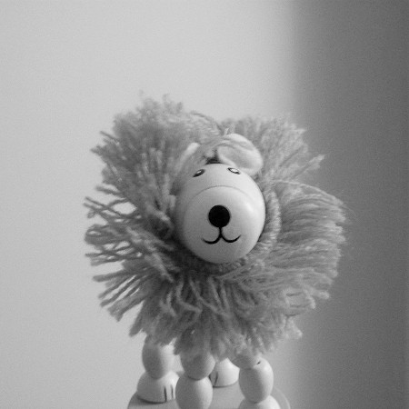

About This Template
This simple, fixed width website template is released under a Creative Commons Attribution 3.0 Licence. This means you are free to download and use it for personal and commercial projects. However, you must leave the 'design from css3templates.co.uk' link in the footer of the template. This template is written entirely in HTML5 and CSS3.
